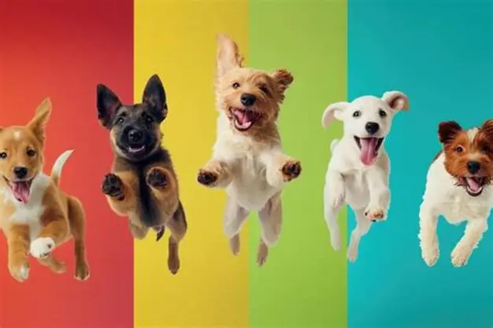
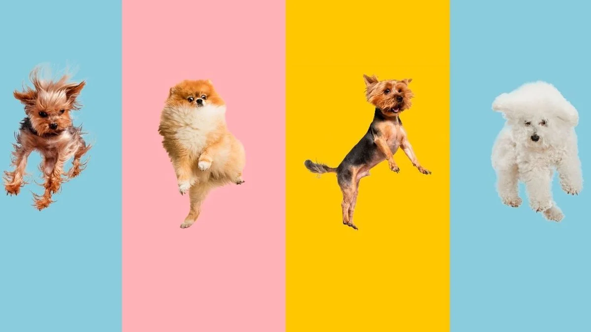

Gabriel
Um cachorro tranquilo que adora companhia.
Um lar faz toda a diferença.
Conheça alguns dos animais que estão esperando por uma nova família. Adotar é oferecer carinho, cuidado e a oportunidade de um novo começo.
Um cachorro tranquilo que adora companhia.

Uma cachorra curiosa e muito carinhosa.

Uma cachorrinha carinhosa e brincalhona.